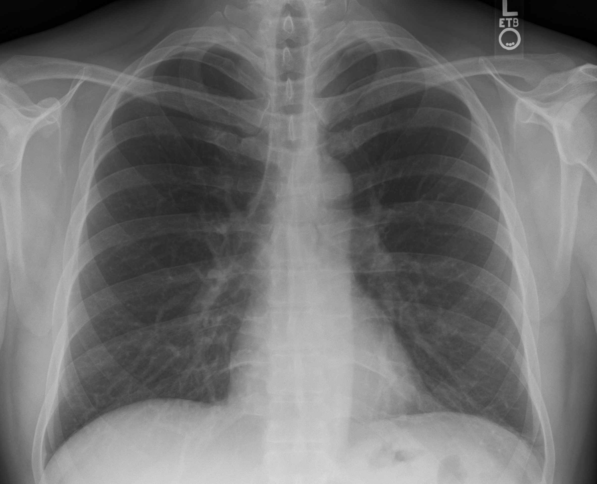

🤏 Gesture Zoom
Pinch your thumb and index finger to zoom.
COMPUTER VISION · HAND GESTURES
Explore a hands-free way to interact with medical images using Python, OpenCV and MediaPipe.

Example image for an educational prototype.
Pinch your thumb and index finger to zoom.
Use the index-finger gesture to navigate the image.
Use an open-palm gesture to rotate the image.
Use a closed fist to pause gesture interaction.
Python · OpenCV · MediaPipe · NumPy · CustomTkinter · Pillow
Clone the repository, install the dependencies listed in requirements.txt, then run python ui.py.
Disclaimer: Educational prototype only. Not intended for clinical diagnosis or medical decision-making.